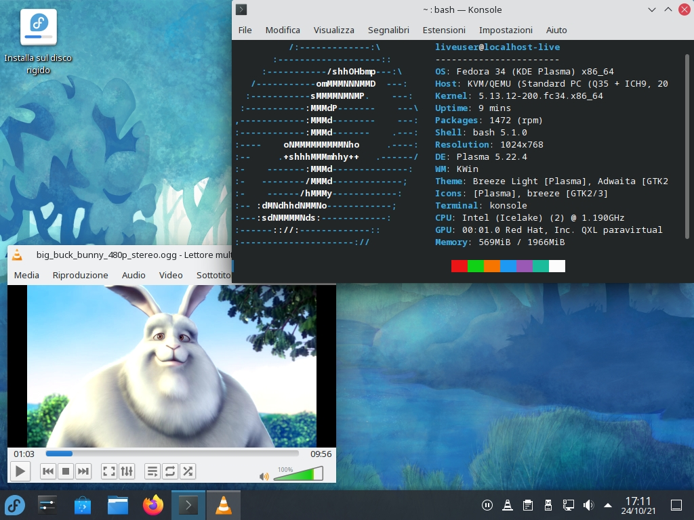
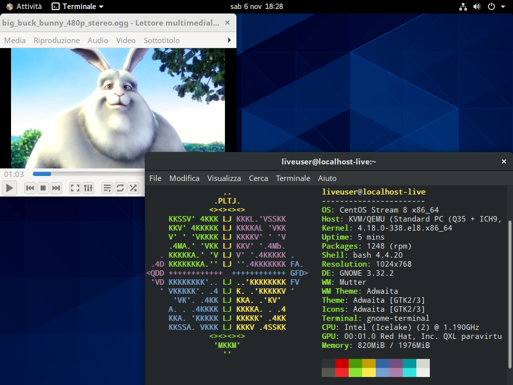

Massi (aka ϵrgosum) GitHub corner
Linux, coding, something else...

 My Fedora Remix, a customization of the distro
for multipurpose usage with localization support.
My Fedora Remix, a customization of the distro
for multipurpose usage with localization support.
 Il mio
Fedora Remix, una personalizzazione della distro
con diverse funzionalità e supporto per l'italiano.
Il mio
Fedora Remix, una personalizzazione della distro
con diverse funzionalità e supporto per l'italiano.

Another customized distro with localization support:
CentOS Stream Remix.
Un'altra distro personalizzata con supporto
per l'italiano: CentOS Stream Remix.